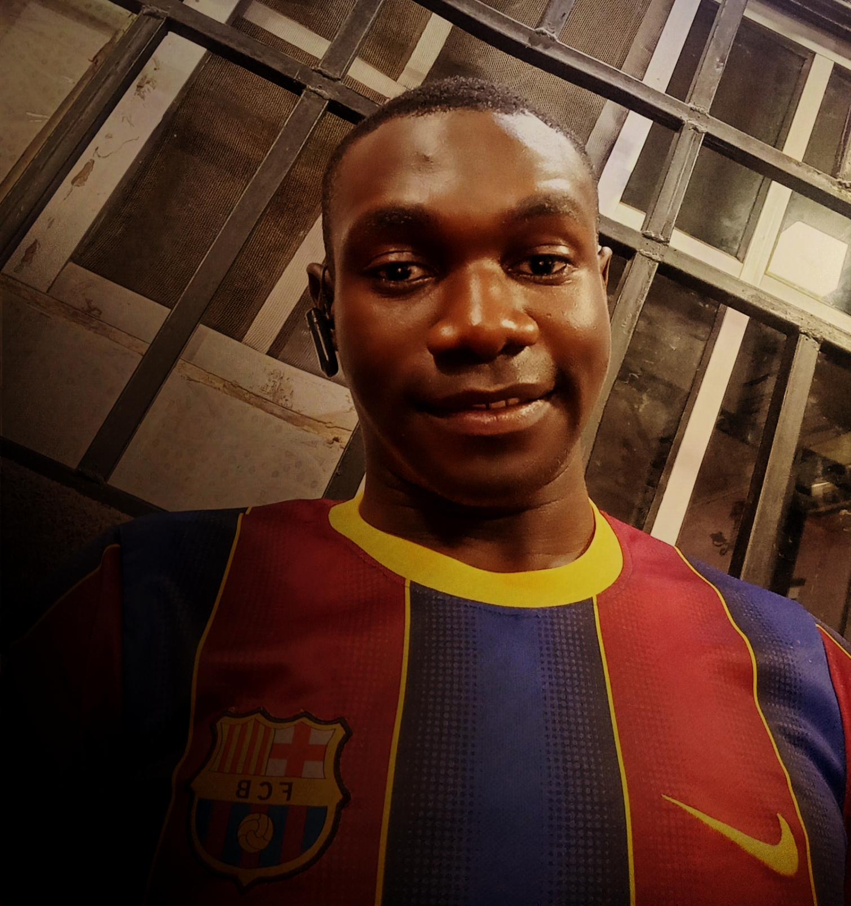

Somadina Ubawike

Summary
A diligent and result oriented developer, with more than 5 years experience in full stack web development.
Education
- Full Stack Web Development course - Udemy (2018)
- Bachelor of Engineering, Chemical Engineering - NAU (2013 - 2018)
Work Experience
-
Website Manager - Tonado Foods LLC
May 2020 till date
- Design Website
- Update Webpages
-
Production Manager - SomaTex Paints Inc
Jan 2019 - Nov 2023
- Inspection of procedure raw materials
- Supervise prodution process
Skills
- Full stack web development: ⭐️⭐️⭐️⭐️
- Paint Technology: ⭐️⭐️⭐️⭐️
- Microsoft office suite:⭐️⭐️⭐️⭐️⭐️
Awards and Certifications
- Manager of The Year - SomaTex Paints Inc (2020)
- Diploma in Health Safety and Environment (HSE) - CIEHS, Neveda (2019)
More